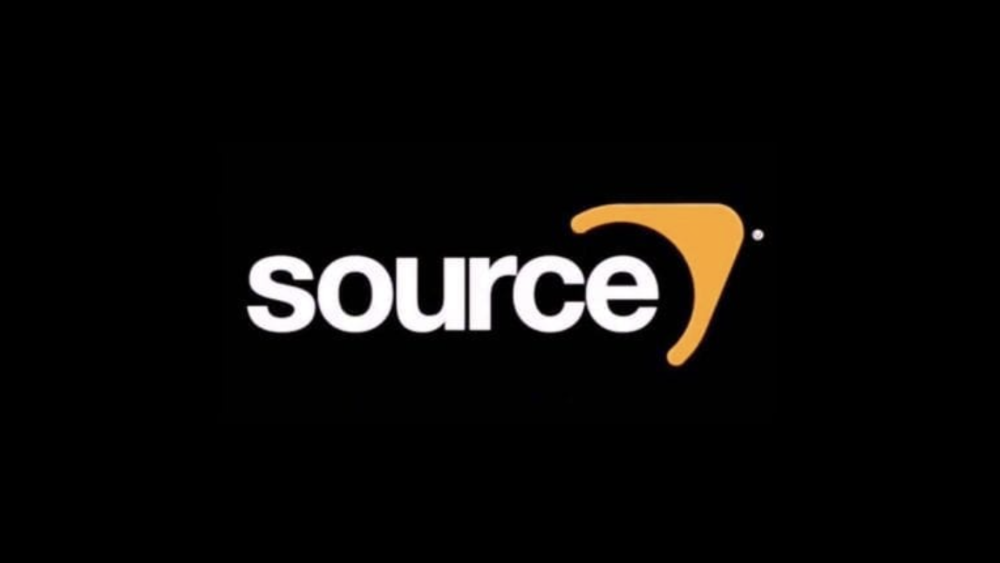

Depuis mes 13 ans, j'ai commencé à m'intéresser au level design.
Plus particulièrement sur Source Engine (le moteur Source) qui a permis la création de jeux tels que Half-Life 2.
Ce moteur était une révolution technologique à son époque en raison de sa conception de la physique et de la masse d'un objet dans l'espace.
Vous trouverez sur cette page les moments forts de mon évolution dans ce domaine avec mes créations, reproductions et autres, mêlant des modèles 3D du level design.

Hammer / Source engine
Level design
Introduction
Catre / Niveau
Voici l'évolution des différentes "levels" / cartes (maps) que j'ai créées au fil des années sur le logiciel "Hammer" utilisant le moteur de jeu (Source Engine).
Voici quelques liens qui peuvent illustrer en vidéo certaines images :
Temple Tython
Maison des maîtres
Mes créations
Sur Blender, j'ai pu réaliser de nombreuses créations pendant ce temps. Vous pouvez voir un aperçu juste au-dessus.
Si vous souhaitez en voir davantage, il y a un slider disponible ci-dessous.
Mes compétences
Me(s) compétence(s) sur le logiciel Hammer du moteur Source engine :
•[Level design]
Elle comprend mes connaissances en création d'un niveau jouable, que ce soit à partir de croquis ou d'autres éléments, pour réaliser un niveau(level) fidèle et optimisé afin de répondre aux attentes.